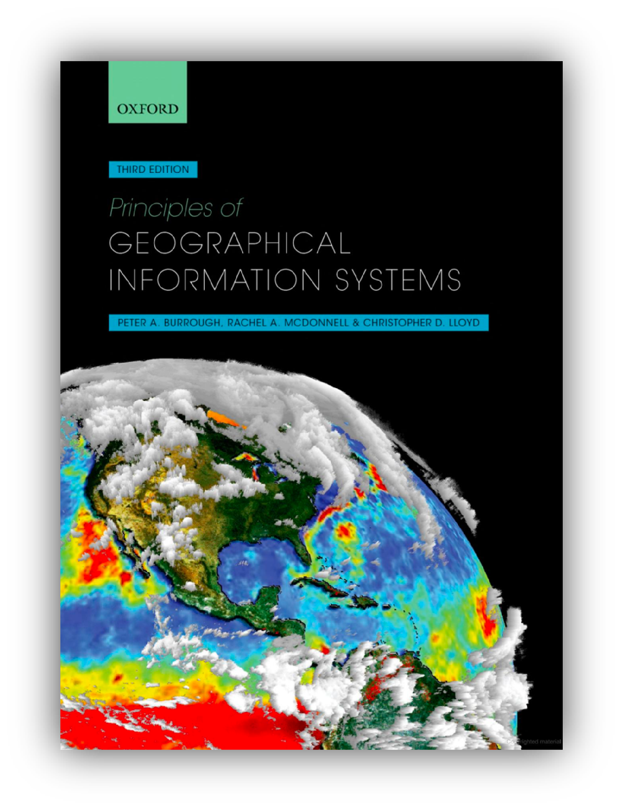

Lecture notes

Download lecture slides and other relevant material:
Week 01
Week 02
Week 03
Recorded lectures
Further reading:
Lectures are largely based on the Burrough et al. and Huisman & de By textbooks.

Principles of Geographical Information
Systems, Third Edition
Full reference: Burrough, P. A., McDonnell, R. A., & Lloyd, C. D. (2015). Principles of Geographical Information Systems (3rd ed.). Oxford University Press. ISBN: 978-0-19-874284-5.
Principles of Geographical Information Systems offers a comprehensive
exploration of both the theoretical foundations and practical
applications of GIS. The book delves into spatial data models, analysis
techniques, and the computational algorithms that underpin geospatial
problem solving.
Principles of geographic information systems : an introductory textbook
Full reference: Huisman, O., & de By, R. A. (Eds.). (2009). Principles of geographic information systems : an introductory textbook (4th ed.). ITC Educational Textbook Series; Vol. 1. ISBN: 978-90-6164-269-5.
This is a free textbook developed by the International Institute for Geo-Information Science and Earth Observation (ITC) in Enschede, The Netherlands. Download the book here.